A clip is not yet a message.
Scouting software can already find the play and cut the clip. But a bare clip leaves players to work out where to look. Here is the same moment as it comes out of a play list, and as it comes out of this app.
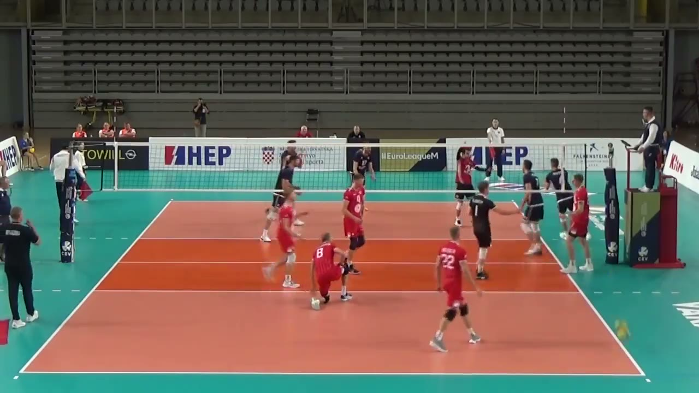

The data adds, on its own
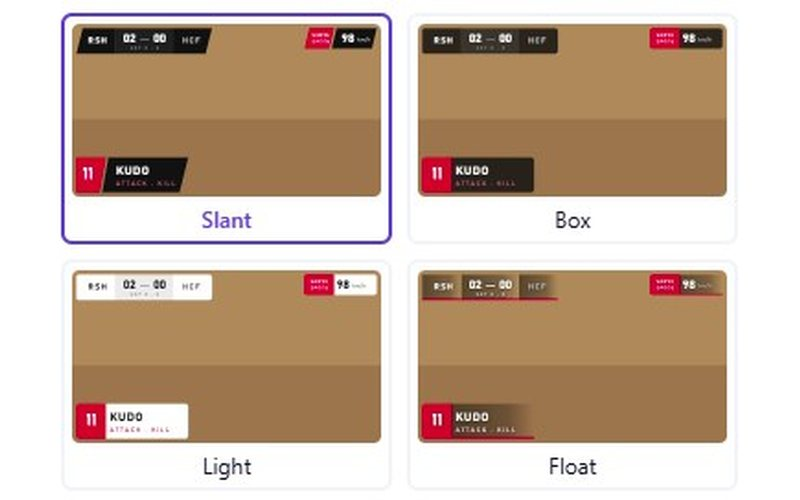
ScoreboardThe score and sets of that rally, in one of four designs. CaptionsNumber, name, skill and evaluation, with the player's photo from a photo pack.
CaptionsNumber, name, skill and evaluation, with the player's photo from a photo pack.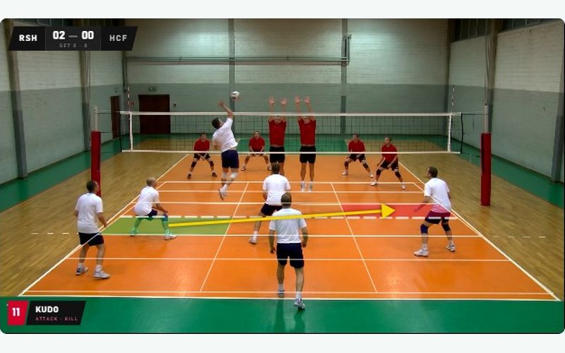
On the courtLandings and heatmaps, flight, zones, serve paths and cones, with a ripple, lock-on, flash or trail where a ball came down, drawn on the floor of the video. Serve speedMark the hit and the touch, and the clip shows the serve's speed.
Serve speedMark the hit and the touch, and the clip shows the serve's speed.
You add, in a few clicks
 Your pointText, arrows and curved arrows, shapes, freehand and numbered circles, each with its own timing and fade, and a draw-in, pulse, blink or ripple to pull the eye.
Your pointText, arrows and curved arrows, shapes, freehand and numbered circles, each with its own timing and fade, and a draw-in, pulse, blink or ripple to pull the eye. Title cardsFor the video, each scene and each marker, with a player photo or a team logo if you have them.
Title cardsFor the video, each scene and each marker, with a player photo or a team logo if you have them. SlidesA still frame, a page from a PDF, or a data slide, between the clips.
SlidesA still frame, a page from a PDF, or a data slide, between the clips.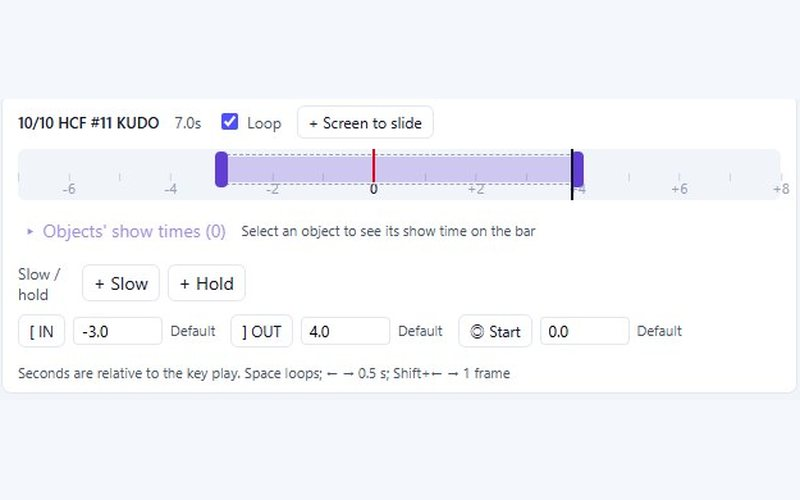
TimingTrim IN and OUT clip by clip, and add slow motion or a freeze.
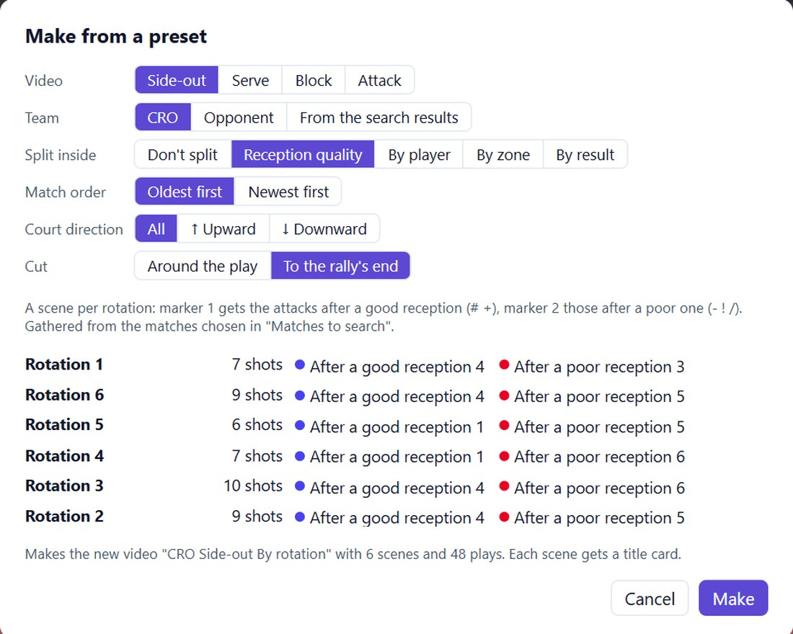
A whole video in one step.
- Side-outA scene per rotation, split by reception quality, player, zone or result.
- ServeA scene per server, with markers by reception, by target zone or in time order.
- Block and attackPer middle blocker or rotation, and per attacker, position or attack code.
- Remake itThe video remembers how it was made. Pick new matches and make it again.
Slides made from the data.
Pick a team and the app draws the slide. Text and photos stay movable, and you can add arrows and shapes. They play inside the video, or go out as PNG, PDF or PowerPoint, with shapes you can still move. A table of a team's players' serves, attacks or receptions is there too.
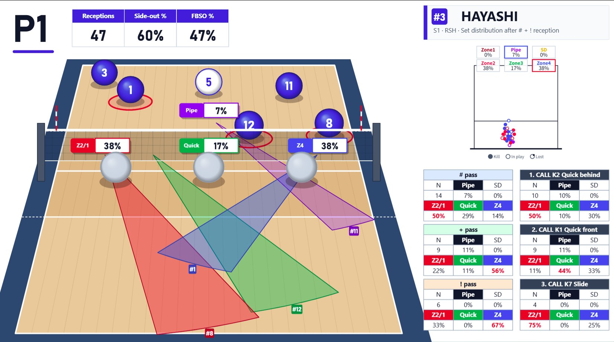


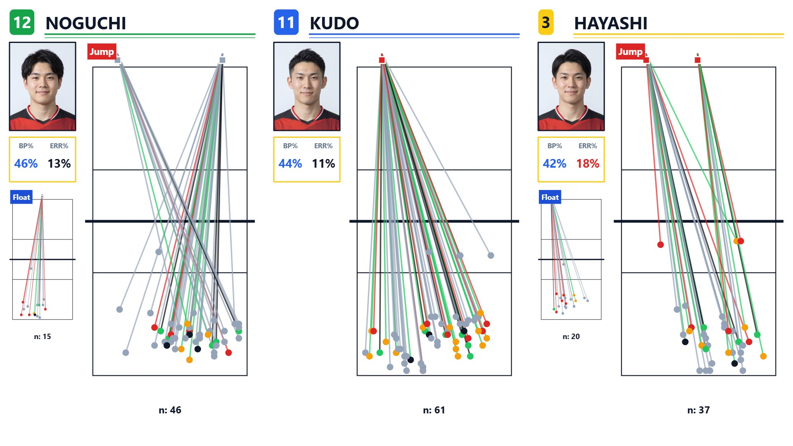

And the rest of the work.
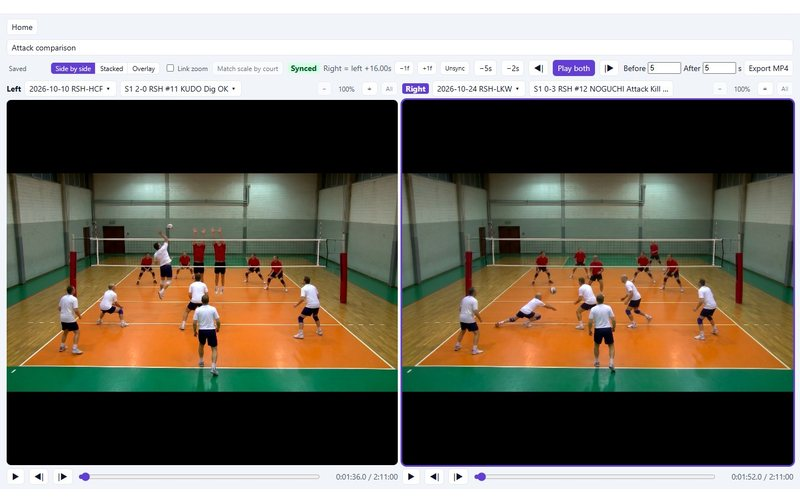
Compare videosPut two videos side by side, stacked or overlaid, and sync them on the same moment. Zoom can follow on both, and the pair exports as one MP4. Saved searchesSave a set of filters under a name and bring it back with one click.
Saved searchesSave a set of filters under a name and bring it back with one click.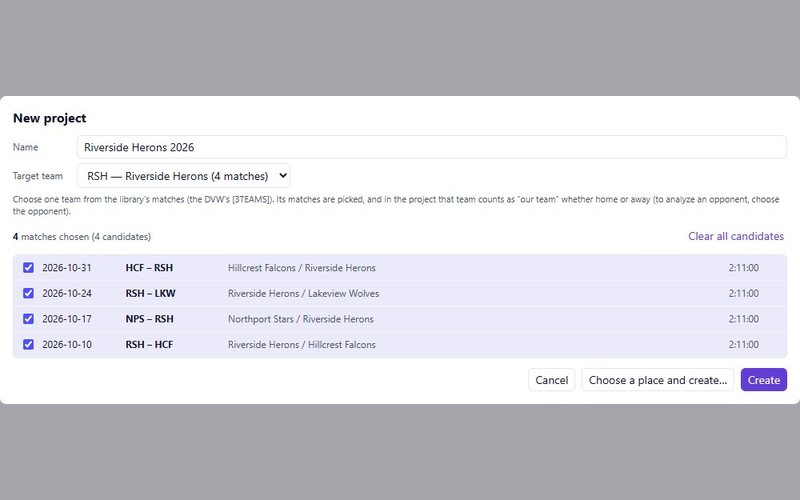
A library for every matchImport once, then build any number of projects from the same matches.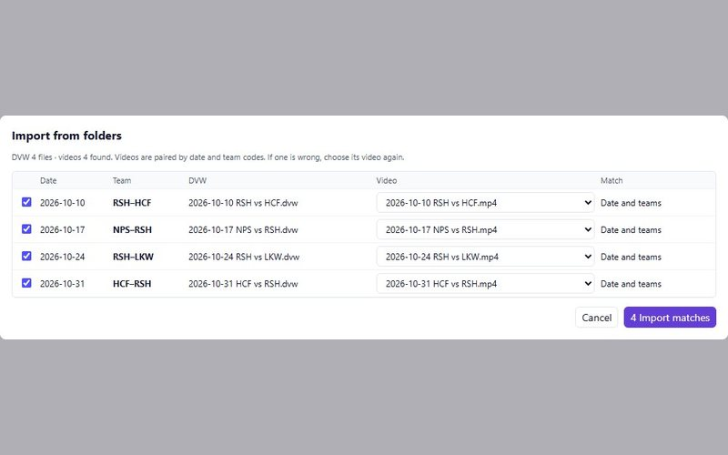
Bulk importPoint at folders and the app pairs the videos with their scout files, VolleyStation .vsm included.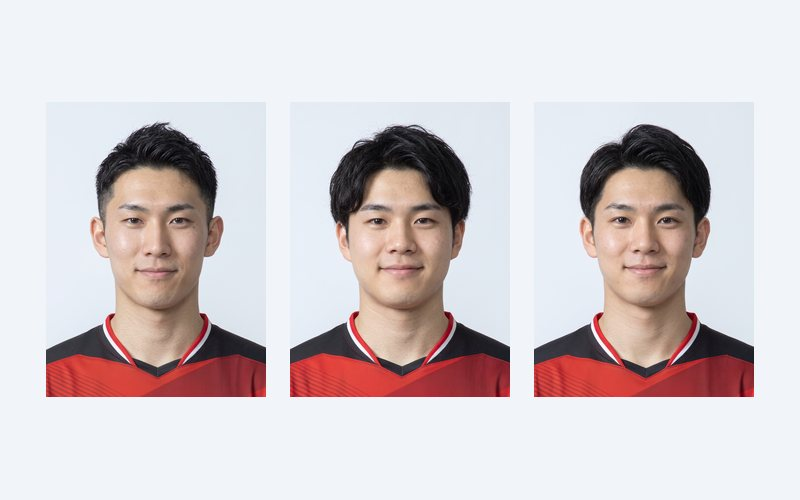
Player photo packsAdd a team's photos once; captions, title cards and slides pick them up.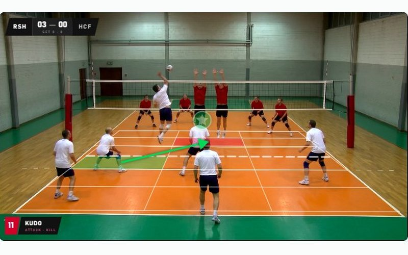
Play throughWatch the play list rally by rally, with the court's marks following the serve, reception and attack on screen. PowerPoint exportSave a scene's slides as a .pptx whose text and shapes you can still edit.
PowerPoint exportSave a scene's slides as a .pptx whose text and shapes you can still edit.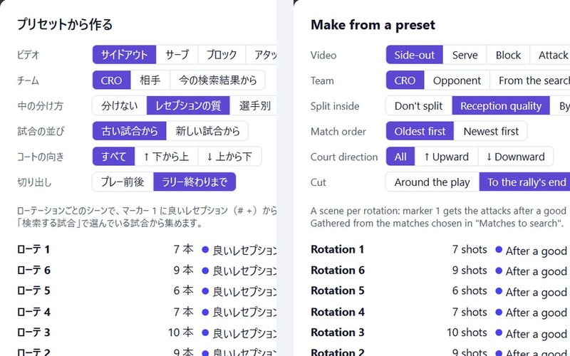
English and JapaneseSwitch the language in Settings.
And everything saves as you go, with undo and redo. New versions download in the background and install on restart.
Find it in SyncScout. Tell it with Video Editor.
| SyncScout | SyncScout Video Editor | |
|---|---|---|
| Role | Find and watch the footage | Finish the video, slides and reports you want to show |
| Runs on | The web | Your computer, offline |
| Footage | YouTube videos and scout files | Local video files with .dvw or .vsm |
| For | Sharing and viewing as a team | Meetings and what the staff wants to show |
Try it with your own video and scout files
For Windows and Mac. Free for 14 days. Next to DataVolley and VolleyStation →